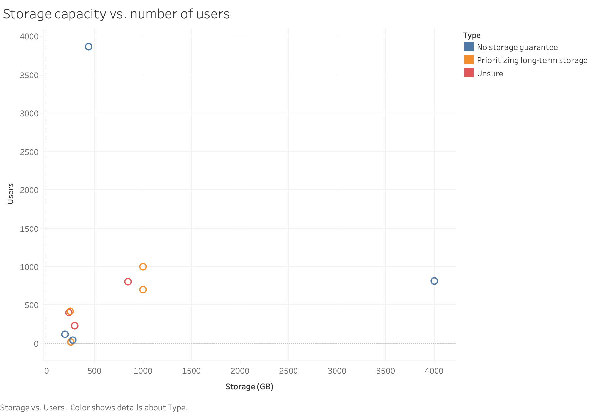
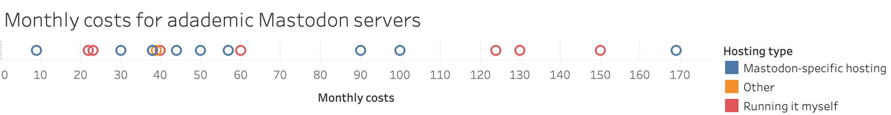

In late November 2022, I drafted an email in English to 49 Mastodon server admins, looking for academically-oriented instances on various lists of extant servers, asking if they would be willing to fill out a survey set up using Framaforms. The survey got 22 responses. All fields were optional, and there was a mix of free-text and multiple-choice questions. There was also a field for respondents to indicate whether they'd be open to having their free-text responses quoted directly and attributed; all other responses would be summarized in the results.
Recency and size of academic Mastodon servers
18 of the 22 responses were from servers that had been created in 2022 — 5 in October, 13 in November. The majority of the servers were small, with under 500 users; even the three servers created prior to 2022 had under 1,000 users. Nonetheless, a few of these new servers — particularly ones with a scientific orientation — had managed to rapidly build a user base of several thousand users.
Hosting location, legal concerns, liability
France was the most popular hosting location for the survey respondents (6 responses), followed by the US (5), and Germany (4). Several left the server location question blank, or stated that they didn't know. The popularity of France is likely related to the fact that a widely-used Mastodon-specific hosting service (masto.host) is based out of there.
The kinds of legal concerns that academic server admins had were not tied particularly closely to server location. Two respondents with servers hosted in the US, and two with servers in Germany, indicated they were concerned about the US DMCA law or other copyright issues, vs. 1 hosted in France. Three respondents with servers hosted in France, two with servers in Germany, and two with servers in the US indicated they were concerned about the GDPR / privacy laws. Illegal speech was a concern for two servers in France, three in the US, and one in Germany.
Of the respondents, only one had liability insurance. 14 respondents said they did not, and 6 indicated they were looking into it.
Technical setup
With a single exception, all the survey respondents were running Mastodon software as such, rather than another fork or variant like Hometown. Half of the survey respondents (11) said that they were installing and running it themselves; 9 respondents use a Mastodon-specific hosting service that handles app-level configuration and updates; several mentioned France-based masto.host, noting they wouldn't have time to run the server if they were responsible for all the technical upkeep involved in running it themselves. FOSSDLE Social shared a link to a blog post describing their configuration setup with Docker and Ubuntu. Several mentioned using a VPS, which may also be in use to run other open-source packages.
With regard to technical specs, several mentioned hosting their server at Digital Ocean, but many other hosting providers were also mentioned.
Storage
The question about technical specs was free-text, so different respondents focused on different things. One parameter that was frequently mentioned was storage space. The range of storage specs was wild, and even more so when taking into account the number of users. One server with around 800 users had 4 TB of storage; another with a similar number had 800 GB. Another with over 3,000 users had only around 400 GB of media storage. None of the respondents mentioned Jortage or any other effort to reduce the inevitable storage costs of media duplication.

Relevant for storage capacity is the server's storage philosophy: is the server intended for ephemeral conversation, or is it part of the scholarly record that should be preserved? The following chart shows storage capacity and user base, color-coded by storage philosophy.
The survey included a question asking about the server's philosophy about storage. 9 of the 21 responses to this question were that the server was mainly for ephemeral conversation, and there was no guarantee of long-term storage. Another 7 said they were unsure, and would see how things develop. Only 3 identified long-term storage as a priority.
Affiliation
13 of the 22 responses said that their server was not affiliated with an organization, though one planned to establish a nonprofit that would offer the server as one of its services. The remaining responses were affiliated with a variety of organizations, including a student IT group at a university, a state library, an academic professional organization, a couple open source organizations, and a couple organizations oriented towards developing scholarly infrastructure for the humanities.
The servers affiliated with an organization were typically funded from the operating budgets of those organizations, though multiple server admins reported volunteering their time.
Costs and budget

The monthly costs that respondents reported for running the server varied, but the majority were in the $30-$50 range, regardless of whether respondents were running the server themselves or using Mastodon-specific hosting.
Because most of these servers were very new, some respondents had a sense that costs would likely increase, but they weren't sure how fast or by how much. One mentioned that their users tend to be late adopters of tech, and it wasn't clear whether the portion of that scholarly community that remained on Twitter after the initial Mastodon migration waves were likely to be there permanently, or if they'd eventually end up joining later, which would increase costs. Rising energy bills were also cited as a potential reason for cost increases, and some respondents were not currently paying moderators but expressed a desire to do so.
Other admins had taken a maximalist approach to their initial setup in order to accommodate the surges of the Twitter migration, and anticipated they might even scale back their technical infrastructure (and related costs) — or that they would keep them the same, and felt confident about running well under capacity.
For the servers that were not supported by an organization, most respondents reported funding it themselves — out-of-pocket, from their research budget, or splitting the funds with other founders.
Not many respondents had set up a crowdfunding option, with several citing reasons including it being unnecessary due to the low cost of running the service, seeing it as a service they wanted to provide to incentivize people to join their organization, or seeing it as part of members' dues. One was concerned about what liability, taxes, or other issues they would open themselves up to by taking donations. One server that did have a crowdfunding option indicated they were one month into the year, and on track to cover the annual costs that way. Another mentioned receiving $1,000 in donations in conjunction with Giving Tuesday (the Tuesday after US Thanksgiving in late November), but was unsure how many of the donations would be recurring.
Language
The language(s) that a server uses for its documentation and other communication with users has an impact on who is likely to use it. It also has implications for moderation, which can be more challenging for content in languages where no one on the moderation team can read those languages.
None of the servers had rules on language use as such, though several noted they preferred or encouraged the use of particular languages other than English. Two servers used German for their user-facing and moderator-facing documentation, and one used Spanish with the plan to add Portuguese soon.
Noteworthy rules
One open-ended question asked about any noteworthy rules on the server. Multiple servers had guidelines for licensing, so that posts on the server would automatically be licensed with a Creative Commons license. One of these servers had chosen a license compatible with "free cultural works" (CC-BY-SA, but users could choose a more liberal license); another went with CC BY-ND.
Several servers had rules intended to clarify misunderstandings about goals or audience — e.g. banning ghostwriting services or predatory journals, or emphasizing that the server is for the academic discussion of things that the general public is interested in, in different ways. Multiple scientific servers had moderation rules in place for science-related posts, roughly amounting to "no quackery". One respondent mentioned doing research to see what rules other servers had, and adapting and building on those examples to align with their goals for their server.
Sign-ups
The vast majority of the academic servers represented in this survey have an application step as part of signing up. For some, it was as simple as giving a plausible reason for joining the server; others did more research on applicants, looking for evidence of some academic connection. One was limited to full-time, employed academics with an institutional affiliation; adjuncts were directed elsewhere. One institutionally-affiliated server required applicants to use an email address from that institution.
Moderation
Most respondents mentioned having between 2-4 moderators, often with server admins contributing to moderation as well. Several mentioned a desire to grow their moderator pool, in order to cover more languages, time zones, or cultural perspectives. Several responses mentioned moderators working together and conferring when reports are filed.
All the responses about moderation load indicated that it had, to date, been very minimal. No one cited numbers greater than 10 moderation reports in the previous month. Some mentioned account creation moderation during the Twitter migration waves taking some time. The highest time estimates were 4-5 hours/wk dedicated to moderation; several others estimated it was a few minutes per week. A couple respondents mentioned needing to ban a couple accounts that were clearly bots, spammers, or other bad actors, but this was rare.
There was an additional question about how the servers handle block/moderate lists of other servers; the responses were a mix of blocking servers due to observing trends of bad behavior by their users, and using blocklists borrowed or adapted from other places (mastodon.social and chaos.social were mentioned). Multiple mentioned using information from #fediblock, but one respondent noted that it's "a lot" to try to keep up with #fediblock.
Challenges
The answers to a question about the biggest challenges were a mix of social, administrative, and technical factors. Several respondents noted technical challenges, sometimes in great and painful detail: servers crashing, challenges in connecting resources, registration emails going to junk mail, sidekiq tuning, memory leaks, challenges adapting the documentation to running the software in a different environment. Beyond that, there were issues ubiquitous in academia — dealing with the volume of email, balancing this with other work, keeping cool when people don't follow instructions. One mentioned dealing with some cultural rifts within the field about to what extent people should limit themselves to "professional content".
The future
When asked about their hopes for the server, almost all respondents mentioned growth— not surprising, given how many of these servers had been running for no more than around a month. Some had specific goals; several mentioned wanting to have 1,000 users after a year. Others hoped to grow in technical scope, either operating other Fediverse software for their users, or doing more with ActivityPub. One server mentioned more real engagement: wanting people to commit to actually using their "stub" account, or move along to a server that better suits their needs if they were only there as a "landing place". Multiple people mentioned a desire to recreate the best of what their field had done on Twitter by way of community and conversation, without the toxicity of Twitter.
To get to this future state, several server admins mentioned being part of the Matrix chat group for Mastodon mods, and some wished for an academic-specific admin channel of communication. One mentioned that particularly smaller academic servers would benefit from being part of a network that could set up relays with one another, to give new users a more active federated timeline. Multiple respondents indicated their desire for more guides, advice and support around legal issues, which were under-documented compared to technical issues around running a server. Guides for moderation best practices, similarly, were mentioned, along with the possibility of academic servers collaborating to apply for grants that would benefit them all.
In conclusion
It's been two months since people responded to this survey — life very much got in the way of my intended turnaround with the results! No doubt the situation for each of these servers has evolved somewhat in that time. It's hard to guess what the academic Mastodon landscape will look like this November; in my own field of digital humanities, I'll be very curious about social media platform use during this summer's conferences. There are several opportunities for academic servers to work together, even as there is also the potential for competition around user base. Realistically, I'm not in a position to try to facilitate academic Mastodon collaboration, but I hope servers take the initiative to reach out to one another and make some of that work happen. Perhaps I'll repeat the survey in the fall to see how things are going?